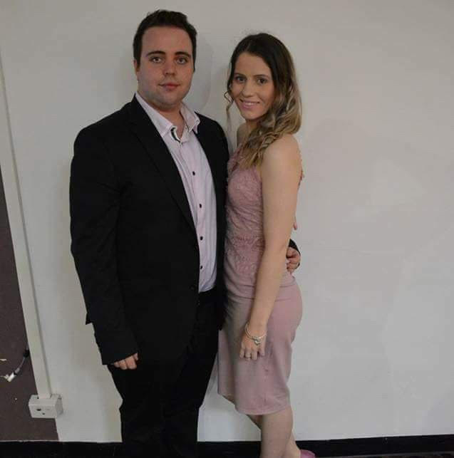
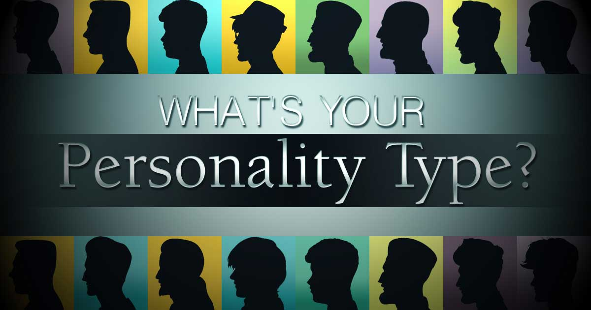
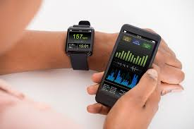

Profile

My name is Adam Dooley and I am a twenty-five-year-old living in Melbourne’s west. My student number is s38083113 and email address is s38083113@student.rmit.edu.au.
I have always had a keen interest in IT and technology in general my entire life and spend my leisure time using a computer, playing video games or engaging in some other sort of tech activity like learning .
to program or just to simply fiddle with tech. I hope to use this course to gain some more insight into the different aspects of the IT industry so that I can find my niche and potentially specialised in a field.
I have worked with McDonalds for ten years and worked my way up to restaurant management where I was lucky enough to run a few different stores and really get a taste for leading a wide range of individuals and as a result I was able to grow and be confident in leading teams.
I have always sought the challenge of solving tech related issues in the workplace, be that a faulty device or software failure and ultimately been exposed to these sorts of things, combined with a lifelong interest of technology has driven me to pursue a career in IT.
RMIT was a sound choice for me as an institute to study with as I have lived in the Melbourne area my whole life and am familiar with the Uni and I feel that sense of familiarity is a great motivating tool to actually sit down and learn.
Ideal Job

The Job advertisement I have chosen is a role as a senior full stack developer with Seek. I like the idea of being a full stack developer as it allows you to have creative input on all aspects of the creation or maintenance of an application.
You would have input on the design, data modelling and all aspects of creating an application.
A link to the advertisement - Full Stack Developer
Skills, Qualifications and Experience Required
There are numerous skills and listed such as proficiency in working with React, C# experience. The current stack used by the business is Node and React therefore you would need to demonstrate competency in using those applications.
Some other requirements are to be proficient in domain drive design, Design Patterns and Data Modelling. You are required to be competent in coding in more than one language and being comfortable in crossing layer boundaries, meaning being able to produce a program that is coded across different applications.
Another aspect of the job as it is a senior role is to mentor and coach others in writing testable and effective code. Having worked in the past as a leader in a workplace, I am passionate about developing the skills and knowledge of others and ultimately would like a role where I can continue to do this to some extent.
How to Obtain Required Skills
There are many free learning materials on the web that will provide a good basis of knowledge for a role such as this senior developer. I could access websites such as Udemy or even watch YouTube Videos and learn the intricacies of applications such as Node and React.
This course and more so the entire Bachelor of Information Technology will give me great foundation knowledge into concepts such as domain driven design and data Modelling. There are accreditations that someone could take to demonstrate that they are profficient in using a language to code a
program and these sorts of things, and a portfolio of similar work would demonstrate the skills and knowledge required.
Personality Type

I completed a Myer Briggs personality test on 16personalities.com that showed that I am an INTP-T or Logician. This a personality type that is know for brilliant theories and unrelenting logic. This personality type is someone that is enthusiastic open minded and straight forward.
However, at the same time they are someone that could appear to be insensitive, private and withdrawn and condescending. These traits are important to note In relation to team work as I am someone who may be enthusiastic about the task at hand and my have valuable ideas and information for the team.
But I may lack the confidence to share the ideas, due to second guessing my ideas or relevancy of points that I would like to bring forward. I am someone that can find it frustrating to convey ideas and explain how my thought process worked, and at times would rather just not give input than trying to offer a clear explanation.
This is crucial when working in teams as it is greatly beneficial in team work to share ideas and hear from different people as this is the basis of innovation. A logician can appear to be someone who is insensitive and this is something that they would need to be aware of when working in teams to ensure that they take other peoples feelings into account
when making decisions and generally being aware that not all decisions will be made purely based on logic.
A logician will positively impact a team as they are imaginative and original people that seek creative ways to solve problems and are sound innovators. They are objective thinkers which ensures they will focus on solving the problem at hand and not stray too far from what is required.
They are people that are honest and straightforward and although in certain situations this could be a boundary for teamwork, it will also allow them to continue with progressing on tasks and keeping things simple.
Creativity Test

I completed the creativity test at test my creativity.com. The test has listed me as someone that is less creative than that of the average person, however I feel that my creativity flourishes in some environments more so than others and it is affected by factors such as the current task at hand and my interest in the task.
An example of this could be that I have never been an artistic person and always struggled with tasks such as painting and drawing, but I enjoy writing and feel that I can generate some creative ideas when constructing a narrative.
It’s important for me to have this knowledge as I can be aware of my lack of creativity in some situations and it may be beneficial for me and the outcome of a project to seek assistance or advice when working on projects that require an aspect of creativity.
Its important to be aware of this when working in the team as others may thrive when a task demands creativity and for the benefit of the project they could focus on that aspect whereas I could focus on the parts that have a more explicit outline or scope.
When forming team’s creativity is crucial as you would preferably want a mix of individuals who are creative and think outside of the box and others that thrive when following structure and instructions. Having a mix would ensure that projects are creative and unique but at the same time will meet guidelines and perform that objective that is required.
Project Health & Fitness

A project I would potentially like to work on in the future would be to create an all in one health tracking and assisting app.
There are plenty of these sorts of apps available, but I would like to create one that will contain important information for all things health related, such as tracking sleep, tracking vitals when exercising and it would need to include an incredibly simple way to track food intake.
I would like to make the journey of health improvement to be as simple as possible, giving users access to information that is current, accurate and relatable to them.
Motivation
In my own quest for improving my health and fitness I have found that the majority of apps that are available are made for an audience outside of in Australia, in that the dietary information is aimed at foods sold in other countries such as America and therefore it takes time to enter data about foods that were bought in Australia.
I would like to make an app for an Australian audience that has a database of general foods and brands sold in Australia which will make the information far more useful especially for those looking to start on the quest of improving health and diet.
This idea will remove the notion that its simply too difficult to find the information that’s required to improve health, fitness and nutrition.
Description
The app would initially be aimed at an Australian audience and contain information relevant to the user, such as if they are looking to join a gym nearby, the app would generate a list, if they are looking for walking trails or other forms of outdoor activities the app would find local and accessible options for them.
The app would also contain links to forums that users can post recipes or food ideas to share with the community. The app would provide the user clearer information on those foods such as dietary information, where they can purchase it in proximity to them and the cheapest price to purchase the item, an example of this being if it was on sale at certain supermarket.
I feel that there is a barrier for a lot of people when trying to prepare healthy foods or recipes that they can find the list of ingredients, but when they get to the supermarket, the names of brands and the varieties can become confusing and overwhelming and I would want the app to explicitly state what you need so that is clear and there is no guessing involved.
Some obstacles for creating an app such as this is keeping the information of where to purchase the right foods relevant and up to date. It may take collaboration from supermarkets so that information on specials and sales can be updated weekly as they change on a weekly basis. The app will also track sleep quality and give information and tips on your sleep cycle and how to improve it and become an efficient sleeper.
It will track vitals, such as heart rate, blood pressure, respiratory rate and body temperature. Based on the data It collects it would suggest methods of exercise that would be beneficial to the user to achieve the health and fitness goals and be able to provide actual ways of achieving these goals.
In summary the app would be able to analyse all your health goals, provide a means to achieve them, such as local foods that you could use or local walking trails or public sporting events that could all assist in achieving those goals and then the app will assist in tracking your progress in achieving these goals.
Tools & Technology
This App would be designed for your mobile phone predominantly, be that android or apple users and this would be the way the user would interact with the app. It would also allow to be connected to more advanced health tracking devices, such as smart watches, heart rate trackers or a GPS tracker.
There would need to be a connection to online forums, where users can collaborate with others, adopt best practices and seek advice and motivation when required.
The aim is that Australians would feel they are supported and not alone in striving to achieve health and fitness goals.
Skills Required
Some skills that would required to bring this app to life, would firstly be to learn to program the software in a language readable by mobile devices as a key factor of this app is that you can access it anywhere and upload data or get the information that you need.
The app would need to be flexible in the way its programmed as it would need to adapt to a variety of health monitoring devices such as smart watches, heart rate monitors and just different branded mobile phones that operate on different software.
This may mean that a variety of versions will need to be designed so that the app could be supported by different kinds of mobile phones and by different health devices.
Aside from the technical knowledge required to develop an application such as this, there would need to be some sort of intergration with Google so that users can get access to timely and accurate information
that they need to achieve their goals. They may need directions, or just simply the capability to search for foods or facilities nearby.
The app will be highly accessible to users on any device as its designed to be convenient.
Outcome
If the app was completed and operated as intended, then it would be a one stop shop for all thing’s health.
It would seamlessly track vitals, sleep pattern and quality, exercise activities and nutritional information. It will also provide recommendations on local facilities for exercise, which can be peer reviewed or recipes that users can upload.
it will provide information on exactly where to go to get the required food or ingredients. This means that it will suggest the nearby supermarket that has the food that you need on sale or if it’s a more specialised item for a specific diet, local users can leave comments regarding where to purchase the product.
In summary the purpose of this app is to break down the barriers that exist for people to live healthy and active lives, whether that be through providing information for exercise or clear and concise direction on food information that users may need to achieve their health goals.
Users will be able to discuss with other local users and get real and relatable advice that will assist them in their health journey.
References

Anon, 2019. Determine My Learning Style. [online] How-to-study.com. Available at: [Accessed 3 Sep. 2019].
Anon, 2019. Free online creativity test - TestMyCreativity. [online] Testmycreativity.com. Available at: [Accessed 2 Sep. 2019].
Anon, 2019. Free personality test, type descriptions, relationship and career advice | 16Personalities. [online] 16personalities.com. Available at: [Accessed 3 Sep. 2019].
Anon, 2019. Senior Devloper - Full Stack. [online] SEEK. Available at: [Accessed 1 Sep. 2019].
Anon, 2019. Senior Devloper - Full Stack. [online] SEEK. Available at: [Accessed 1 Sep. 2019].
Global Workplace Insider, 2014. Image for referencing site. [image] Available at: [Accessed 15 Sep. 2019].
Precision Medicine Forum, 2019. Tech Devices. [image] Available at: [Accessed 12 Sep. 2019].
TheConversation, 2019. Picture Insighting Creativity. [image] Available at: [Accessed 12 Sep. 2019].